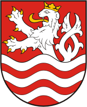

Seleccione una región del mapa
Haga clic en una de las regiones del mapa para ver información detallada.
Liberec
Liberec es una ciudad situada al norte de la República Checa, capital de la región de su nombre. Es la quinta ciudad en población en la República Checa, contando con 104 508 habitantes. A tan solo unos pocos kilómetros de Alemania y Polonia es un enclave en las comunicaciones por tren y carretera en esta zona.
Uno de los principales atractivos turisticos de la región de Liberec es la Torre Ještěd es un transmisor de televisión y hotel situado en la cima del monte Ještěd, cerca de Liberec, en la República Checa. Es una estructura icónica, reconocida por su forma de hiperboloide y su diseño en hormigón armado.

La torre, que alcanza una altura de 94 metros, fue diseñada por el arquitecto Karel Hubáček.
Ústi nad Labem
Ústí nad Labem es una ciudad de la República Checa situada al noroeste del país, capital de la región homónima. Se encuentra a 30 kilómetros de la frontera alemana y a 88 kilómetros de capital checa Praga.

Es la séptima ciudad más poblada del país con una población cercana a los 100.000 habitantes. Está situada en los Montes Metálicos, cerca de la confluencia entre el río Elba y el río Bílina.

La cerradura cerca Střekov
Es uno de los centros industriales más importantes del país, además de poseer uno de los puertos fluviales más activos de la región. Es también un importante nodo ferroviario.
Karlovy Vary
Karlovy Vary es una región de la República Checa situada al oeste del país y hace frontera con Alemania, la capital de esta región recibe el mismo nombre y tiene una población estimada, a inicios de 2023, de 49 043 habitantes. Es una ciudad estatutaria situada en la confluencia de los ríos Ohře (Eger) y Teplá.

Escudo de armas de la ciudad de Karlovy Vary
Karlovy Vary recibió este nombre en honor del emperador del Sacro Imperio Romano Germánico Carlos IV, quien fundó la ciudad en 1350. Es famosa históricamente por sus fuentes termales (trece fuentes principales y unos cientos más pequeñas) y el río Teplá, también de aguas calientes.

Llego a ser un famoso destino turístico en el siglo XIX, especialmente para personajes internacionales ilustres que buscaban tratamientos termales.
Pilsen (Plzeň)
Pilsen (en checo: Plzeň) es una ciudad ubicada en el oeste de Bohemia en la República Checa. Es la capital de la Región de Pilsen. Tiene 180.000 habitantes y es la cuarta ciudad checa más grande (después de Praga, Brno y Ostrava) y la segunda más grande de Bohemia (después de Praga). Se encuentra en la confluencia de cuatro ríos, a unos 80 km al oeste de la capital checa Praga, con la que Pilsen está conectada por la autopista D5.

Pilsen se ha hecho famosa sobre todo por la fabricación de la cerveza; la marca Pilsner Urquell (Plzeňský Prazdroj) dio el nombre al tipo de cerveza pilsener, hoy difundido en el mundo entero. En Pilsen fueron fundadas asimismo las primeras fábricas de la famosa empresa de maquinaria Škoda Works, siendo actualmente la sede de Škoda Transportation donde se producen medios de transporte urbanos y ferroviarios.
 Estadio de fútbol FC Viktoria Pilsen
Estadio de fútbol FC Viktoria Pilsen
En los últimos años, Pilsen es conocida también gracias a su club de fútbol FC Viktoria Plzeň, que logra imponerse incluso en la escena europea.
Bohemia Meridional
La región de Bohemia del Sur (Jihočeský kraj en checo) es una unidad administrativa en la República Checa, ubicada en la parte sur de la región histórica de Bohemia. Es conocida por su belleza natural, castillos históricos y pueblos pintorescos.

Limita con las regiones de Pilsen, Bohemia Central, Vysočina y Moravia Meridional. También limita con Alemania y Austria. Esta región también suele llamarse Budĕjovický kraj o Českobudĕjovický kraj pero desde 2001 estos términos se han vuelto obsoletos.
 Detalle de la ciudad en un mapa de comienzos del siglo XVIII
Detalle de la ciudad en un mapa de comienzos del siglo XVIII
La capital de Bohemia Meridional es la ciudad de České Budějovice que al mismo tiempo es la ciudad mas poblada de esta región. Conocida por ser la sede de la cerveza Budweiser Budvar, pero también como una importante ciudad universitaria. La primera parte del nombre, České (bohemos), sirve para diferenciarla de la ciudad morava de Moravské Budějovice.